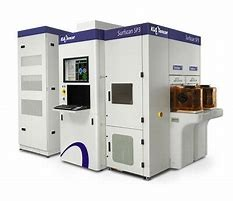

KLA Surfscan SP7

Wat doet de KLA Surfscan SP7?
De Surfscan SP2 inspecteert wafers (alleen voor 300mm) op oppervlaktedefecten zoals:
- Stofdeeltjes
- Krasse
- Residuen van chemische processen
- Microkrasjes en andere onregelmatigheden
De wafer wordt blootgesteld aan DUV-laserlicht.
Hoe werkt de Surfscan SP2
- Donkerveldverlichting:
Een laserstraal wordt onder een specifieke hoek op de wafer gericht. Defecten verstrooien het licht, wat wordt opgevangen door detectoren
- Multikanaaldetectie:
Meerdere detectoren verzamelen gegevens over de verstrooiing van licht, waardoor het systeem verschillende soorten defecten kan onderscheiden
- Geavanceerde algoritmen:
De verzamelde gegevens worden geanalyseerd om defecten te classificeren op basis van grootte, type en locatie
Verschil SP2
De SP7 heeft een verbeterde DUV-laser met lagere ruis. Ook kan de SP7 defecter detecteren die kleiner zijn dan 15 nanometer.